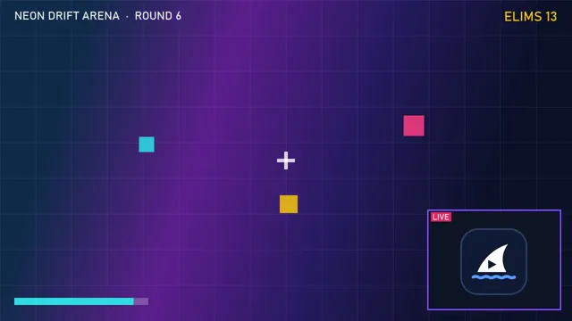

Kick ile çalışırayrıca Twitch, YouTube ve her video dosyası
Yayının girer, paylaşmaya hazır klipler çıkar.
SharkyClips yayın kaydındaki en iyi anları bulur ve YouTube Shorts, TikTok ve Instagram Reels için dikey kliplere çevirir. Hepsi kendi bilgisayarında çalışır.
- %100 ücretsiz
- Filigran yok
- Sınır yok
- Bilgisayarında çalışır
Gerçek sonuçlar
Her çift, uzun yayından bir anı ve SharkyClips'in o andan kendi başına yaptığı klipteki aynı anı gösterir: kesilmiş, 9:16'ya çevrilmiş, altyazılı ve başlıklı.

Yayın · 4:39 Hazır klip
Hazır klipOne grenade, triple kill! What did I see? 🤯Yüksek sesli tepki, sohbet patlaması (14 kat fazla mesaj) ve "what the hell" yüzünden seçildi. Puan 93.  Yayın · 1:11
Yayın · 1:11 Hazır klip
Hazır klipOne versus three? I pulled off a CLUTCH! 😱1'e 3 geri dönüş: yüksek ses, 12 kat hızlı sohbet, "no way" ve "clutch". Puan 78.  Yayın · 5:28
Yayın · 5:28 Hazır klip
Hazır klipDid that last throw really just win the game?Kazanma anı: kısa bir sessizlik, ardından bağırış ve "let's go". Puan 85.  Yayın · 0:21
Yayın · 0:21 Hazır klip
Hazır klipDid you really see that double elimination happen?Çifte leş: "oh my god", yüksek sesli tepki ve 11 kat hızlı sohbet. Puan 82.  Yayın · 2:53
Yayın · 2:53 Hazır klip
Hazır klipZero armor, reckless run, barely alive! 😱Boss'tan panik kaçış. Küfür biplendi ve altyazıda gizlendi. Puan 64.  Yayın · 3:51
Yayın · 3:51 Hazır klip
Hazır klipPracticed all week, then finally landed itBütün hafta çalışılan atlayış: sohbette "yes!" ve "LETS GOOO". Puan 75.
Demo yayınımızdan yapıldı (çizilmiş bir oyun, bilgisayar sesi ve üretilmiş bir sohbet); gerçek bir kişi, oyun veya kanal yok. Elle hiçbir düzenleme yapılmadı.
Nasıl çalışır
Üç adım. Aradaki kurgu işini SharkyClips yapar.
Yayınını ekle
Bir video dosyası bırak ya da Twitch, YouTube veya Kick bağlantısı yapıştır. SharkyClips OBS klasöründeki en yeni kaydı da alabilir.
SharkyClips klipleri yapar
Gürültülü, komik ve heyecanlı anları bulur, temiz keser, altyazı ekler, küfürleri bipler ve başlıkları yazar.
Kontrol et ve paylaş
Klipleri izle, istediğini değiştir ve YouTube Shorts, TikTok ve Instagram Reels'e paylaş.


Yayıncılar için yapıldı
Anları bulur
Yüksek tepkiler, kahkahalar, sohbet patlamaları ve oyun içi olaylar sıralı tek bir klip listesine dönüşür.
Bipler, kontrollü
Küfürler 11 dilde biplenir ve her biten klip yeniden dinlenir.
Tek Paylaş düğmesi
YouTube Shorts, TikTok ve Instagram Reels; her biri için doğru açıklama ve sınırlarla.
TikTok yardımcısıYeni
Edge, Chrome, Opera ve Brave için küçük bir tarayıcı eklentisi TikTok yüklemeni doldurur. Kontrol eder ve Paylaş'a kendin basarsın.
Fotoğraf slayt gösterisiYeni
2 ile 20 fotoğrafı etiketli ve müzikli dikey bir önce-sonra videosuna çevir.
Temalar ve renklerYeni
Uygulama için dört renk teması (Klasik, Okyanus, Shark Sign, Yüksek kontrast), koyu veya açık, ve kendi vurgu rengin.
SharkyClips ve diğerleri
Bilgiler her ürünün resmi sitesinden, 28 Kasım 2026 tarihinde kontrol edildi. Fiyatlar ABD doları, vergi hariç. Planlar değişir; karar vermeden önce kendi sayfalarına bak.
| Özellik | SharkyClips | Eklipse | OpusClip | StreamLadder |
|---|---|---|---|---|
| Fiyat | Ücretsiz (açık kaynak, MIT lisansı) | Ücretsiz deneme; Premium ayda 24,99 $ veya yılda 179,99 $ | Ücretsiz plan; ücretli planlar ayda 15 $'dan başlar | Ücretsiz plan; ücretli planlar ayda 15 $ veya yılda 150 $'dan başlar |
| Filigran | Hiçbir zaman | Ücretsiz dışa aktarımlarda | Ücretsiz planda | Yalnızca ücretsiz bir klip ücretli özellik kullanırsa |
| Klip sınırı | Yok | Ücretsiz: yakın tarihli bir yayının kliplerine önizleme; Premium: sınırsız yapay zekâ kliplemesi | Ücretsiz: ayda 60 işleme dakikası, dosyalar 3 gün saklanır | Dakika sınırı yok; tüm yayını yapay zekâyla klipleme Creator planından (ayda 27 $); ücretsiz dışa aktarım 720p |
| Videon nerede işlenir | Bilgisayarında: hiçbir şey yüklenmez | Çevrim içi: yapay zekâ düzenlemesi bulutta çalışır | Çevrim içi: dosya yüklersin veya bağlantı yapıştırırsın | Çevrim içi: dosya yüklersin veya bağlantı yapıştırırsın |
| Ne gerekir | 8 GB RAM'li Windows 10 veya 11 bilgisayar (macOS: daha az test edildi) | Tarayıcı ve hesap | Tarayıcı ve hesap | Tarayıcı ve hesap |
| Oyunu tanıyan algılama | Delta Force ve League of Legends'ta oyun ekranını okur; diğer oyunlarda ses, konuşma ve sohbetten | 3.000'den fazla oyun, her oyun kategorisine göre ayarlı | Belirtilmemiş | Belirtilmemiş |
| Kick | Kick videoları ve sohbet kayıtları | Kick yayınlarını içe aktarır | Kick bağlantıları desteklenir | Ücretsiz planda Kick klipleri; tüm Kick yayınları Creator planından |
| Küfür bipleme | 11 dilde otomatik, her klip yeniden kontrol edilir | Belirtilmemiş | Pro planından (ayda 29 $) | Otomatik kelime sansürü (plan açıkça belirtilmemiş) |
| Diller | 11 (uygulama, konuşma tanıma ve altyazı) | Altyazı için belirtilmemiş; sesli komutlar İngilizce | Altyazı için 25'ten fazla | Altyazı için 90'dan fazla |
"Belirtilmemiş", resmi sayfalarında bulamadığımız anlamına gelir. Yanlış veya eski bir bilgi mi var? İletişim sayfasından bize yaz, düzeltelim.
Kaynaklar (14 resmi sayfa)
- eklipse.gg
- eklipse.gg/help/how-much-does-eklipse-premium-cost
- eklipse.gg/help/what-are-the-main-differences-between-the-free-and-premium-plans
- eklipse.gg/help/will-my-exported-video-have-a-watermark
- eklipse.gg/help/import-kick-streams-to-eklipse
- eklipse.gg/features/ai-edit
- opus.pro/pricing
- help.opus.pro/docs/article/plans-and-credits.md
- help.opus.pro/docs/article/video-sources-supported.md
- help.opus.pro/docs/article/video-languages-supported.md
- streamladder.com/pricing
- streamladder.com/clipgpt/import-from-kick
- streamladder.com/clip-editor/word-censoring
- streamladder.com/clip-editor/captions
SharkyClips YouTube'u nasıl kullanır
YouTube'u bağlamak isteğe bağlıdır. Bağlarsan SharkyClips resmi YouTube API Hizmetlerini yalnızca seçtiğin klipleri yüklemek, yönetmek ve sonuçlarını sana göstermek için kullanır. YouTube verilerin bilgisayarında kalır.
İzinleri ve YouTube verilerinin nasıl kullanıldığını göster
YouTube'a yüklemek isteğe bağlıdır. Kanalını Ayarlar → YouTube bölümünden bağlarsan SharkyClips resmî YouTube API Hizmetleri'ni tam olarak şunlar için ve yalnızca sen istediğinde kullanır:
| İşlem | İzin (kapsam) | Ne zaman |
|---|---|---|
| Hazırladığın bir klibi yüklemek (başlık, açıklama, etiketler, gizlilik, yayın zamanı, oynatma listesi, küçük resim); ayrıntılarını ya da yayın zamanını değiştirmek, erken yayınlamak veya herkese açık olmadan iptal ettiğinde silmek; hangi kanalın bağlı olduğunu göstermek; SharkyClips ile yüklenen videoların izlenme, beğeni ve gizlilik durumunu okumak | youtube | Şimdi yayınla'ya bastığında ya da bir klibi zamanladığında (bilgisayarın açıkken önceden yüklenir), Kütüphanede düzenlediğinde ya da iptal ettiğinde, Ayarları açtığında ve uygulama çalışırken yaklaşık 6 saatte bir |
| Aynı videoların ortalama izlenme yüzdesini okumak; böylece hangi açılış (hook) tarzının izleyicileri tuttuğunu öğrenmek | yt-analytics.readonly | Yalnızca bir hook testinin parçası olarak yüklenen ve 48 saattir herkese açık olan klipler için |
Bu veriler yalnızca senin bilgisayarında saklanır ve yalnızca sana sonuçlarını göstermek ve senin kanalın için klip puanlarını iyileştirmek için kullanılır. SharkyClips'in sunucusu yoktur: geliştiriciler YouTube verilerini asla almaz, görmez ya da paylaşmaz ve hiçbir şey reklam için kullanılmaz. SharkyClips başkalarının kanallarını, yorumlarını, abonelerini ya da izleme geçmişini asla okumaz. Yalnızca SharkyClips ile yüklenen videoları ve yalnızca sen istediğinde değiştirir ya da siler (örneğin zamanlanmış bir klibi düzenlediğinde ya da iptal ettiğinde).
Bağlantıyı istediğin zaman Ayarlar → YouTube bölümünden kesebilirsin (bu, Google'daki erişim jetonunu iptal eder) ya da erişimi Google hesap izinlerinden kaldırabilirsin. Bağlanarak YouTube Hizmet Şartları'nı kabul edersin; Google verilerini Google Gizlilik Politikası'na göre işler. Tam gizlilik politikamızı ve kullanım koşullarımızı oku.
Ücretsiz, açık kaynak, gizli
SharkyClips MIT lisanslıdır: abonelik yok, kredi yok, filigran yok. Hesap ve takip yok; videoların sen paylaşmadıkça bilgisayarında kalır. Kaynak kodu ve her sürüm GitHub'da.